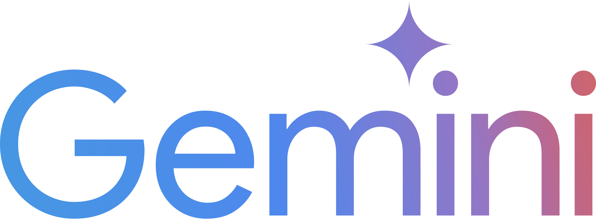
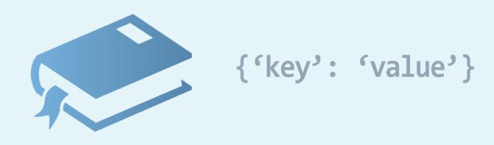
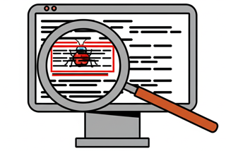
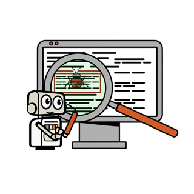

Vibe Coding 與軟體工程初探課程
課程總覽
哈囉，同學們！歡迎來到「Vibe Coding 與軟體工程初探課程」！
在這四週的課程中，我們將一起：
- 探索主流 AI 語言模型：認識 ChatGPT、Google Gemini、Anthropic Claude，並學習如何與它們有效互動。
- 運用 ChatGPT 概念深化 Python：前兩週我們將以 ChatGPT 的互動模式為藍本，強化 Python 技能。
- 精通 Cursor AI 輔助開發：後兩週我們將深入 Cursor，用它來完成一個精彩的期末專案。
- 成為小小軟體工程師：學習怎麼寫出漂亮、好懂、不容易出錯的程式碼。
- 跟 AI 精準溝通：學習撰寫有效的 Prompt，讓 AI 成為你強大的學習與開發夥伴。
準備好了嗎？讓我們一起開始這趟全新的 AI 程式設計之旅吧！
第一週：AI 語言模型概覽與 ChatGPT 互動基礎
本週學習目標
- 快速複習 Python 的重要觀念。
- 認識主流 AI 大型語言模型：ChatGPT (OpenAI)、Gemini (Google)、Claude (Anthropic) 的基本特色與應用。
- 學習如何像與 ChatGPT 互動一樣，有效地向 AI 提問以輔助 Python 學習。
- 掌握 Prompt 工程初步：如何撰寫清晰、具體的指令讓 AI 更懂你的需求。
- 初步建立程式碼風格與可讀性的觀念。
(一) Python 核心回顧
1. Python 暖身操
我們已經學過 Python 的基本功了，對吧？讓我們快速回憶一下：
- 變數 (Variables)：儲存資料的小盒子 (例如：
my_name = "小明",age = 13)。 - 資料型態 (Data Types)：不同種類的資料 (例如：文字
str, 數字int,float, 布林值bool)。 - 運算子 (Operators)：做運算的符號 (例如：加減乘除
+ - * /, 比較大小> < ==)。 - 控制流程 (Control Flow)：讓程式決定下一步怎麼走 (例如：
if...elif...else條件判斷,for和while迴圈)。
(二) AI 語言模型大觀園
歡迎來到 AI 語言模型的世界！這些聰明的 AI 能理解和生成文字，甚至程式碼！
這週我們將認識幾位赫赫有名的 AI 大師：
- ChatGPT (來自 OpenAI)
- Gemini (來自 Google)
- Claude (來自 Anthropic)
以及我們之後專案會用到的 Cursor (一個整合了 AI 功能的程式編輯器)。
(二) AI 語言模型大觀園
1. ChatGPT (OpenAI)
- 特色：非常擅長對話、回答問題、撰寫文章、生成程式碼片段、除錯建議等。
- 強項：自然語言理解與生成能力強，知識範圍廣泛（但要注意知識截止日期）。
- 互動方式：主要透過聊天介面進行問答。
- 應用：學習輔助、內容創作、程式碼初步生成與解釋。
我們前兩週會主要以 ChatGPT 的互動模式為範例，學習如何與 AI 協作。
(二) AI 語言模型大觀園
2. Gemini (Google)
- 特色：Google 開發的多模態 AI 模型，能理解和處理文字、圖片、聲音、影片和程式碼。
- 強項：與 Google 生態系統整合緊密，具有強大的搜尋與資訊整合能力，多模態理解是其亮點。
- 互動方式：可透過 Bard (現在是 Gemini App) 聊天介面、API 等方式互動。
- 應用：複雜問題解答、跨模態內容生成、程式碼輔助、研究分析。
(二) AI 語言模型大觀園
3. Claude (Anthropic)
- 特色：由 Anthropic 公司開發，特別強調 AI 的安全性、可靠性和可解釋性。
- 強項：在處理長文本、遵循複雜指令、生成較為「無害」的內容方面表現突出。擁有較大的上下文視窗 (Context Window)。
- 互動方式：主要透過聊天介面和 API。
- 應用：長文件摘要與問答、創意寫作、需要高度遵循指令的任務、企業級應用。
(二) AI 語言模型大觀園
以及我們之後的專案好夥伴：Cursor
- 定位：一個「AI 優先」的程式編輯器，深度整合了 AI 輔助功能。
- 特色：可以直接在編輯器中與 AI 對話、生成程式碼、修改現有程式碼、解釋程式碼、除錯等。
- 為什麼我們後面要用它做專案？ Cursor 將 AI 的能力直接融入到我們寫程式的每一個環節，可以大大提升開發效率和學習體驗。
我們會在第三週詳細學習如何使用 Cursor！
(三) 精準提問 AI：Prompt 工程初步
無論你使用 ChatGPT、Gemini、Claude 還是 Cursor 裡的 AI，要讓它們真正幫上忙，我們得學會怎麼「好好跟它們說話」。
我們給 AI 的指令或問題，就叫做 Prompt。
(三) 精準提問 AI：Prompt 工程初步
為什麼 Prompt 很重要？
- AI 不是萬能的，它需要我們清楚地告訴它「你想做什麼」。
- 你給的 Prompt 越清楚、越具體，AI 給你的答案或程式碼就會越符合你的期望。
- 口訣：垃圾進，垃圾出 (Garbage In, Garbage Out)！
(三) 精準提問 AI：Prompt 工程初步
如何寫出好的 Prompt？
- 提供足夠的上下文 (Context)：告訴 AI 你正在處理什麼問題，相關的程式碼片段是什麼。
- 明確指出你的目標 (Goal)：你希望 AI 幫你完成什麼？是產生程式碼、解釋、還是除錯？
- 給予範例 (Examples)：如果可以，給 AI 一些輸入和輸出的範例，它會更容易理解你的需求。
- 逐步引導 (Iterative Prompting)：不要想一次就得到完美的答案。可以先給一個簡單的 Prompt，然後根據 AI 的回應，再逐步修正或補充你的 Prompt。
(三) 精準提問 AI：Prompt 工程初步
活動時間：Prompt 大挑戰！
- 情境：假設你想寫一個 Python 函式，它可以判斷一個數字是不是偶數。
- 試著用至少兩種不同的 Prompt，想像你要問 ChatGPT (或其他聊天 AI)，請它幫你寫這個函式。
Prompt 範例1 (比較模糊)：
「寫個判斷偶數的 Python。」
Prompt 範例2 (比較清楚)：
「請幫我寫一個 Python 函式，名稱叫做 `is_even`。這個函式接受一個整數作為參數，如果該整數是偶數，函式應該回傳 `True`，否則回傳 `False`。」
- 思考一下，這兩種 Prompt 可能會得到什麼不同的回應？
- 和同學討論一下，怎麼樣的 Prompt 才能讓 AI 更「懂你」？
(四) 軟體工程概念：程式碼風格與可讀性
寫程式不只是讓電腦看得懂，更重要的是讓人 (包括未來的你、你的同學、還有 AI) 也能看得懂！
(四) 軟體工程概念：程式碼風格與可讀性
為什麼可讀性很重要？
- 容易理解、容易修改、容易除錯。
- 方便團隊合作。
- AI 也更能理解你的程式碼，提供更精準的協助。
(四) 軟體工程概念：程式碼風格與可讀性
如何提升程式碼可讀性？
- 有意義的命名：變數名稱、函式名稱要能清楚表達它們的用途。
- 壞例子：
x = 10,a = "小明",func1() - 好例子：
item_count = 10,student_name = "小明",calculate_average_score() - (小提示：可以參考 Python 的 PEP 8 風格指南)
- 壞例子：
- 適當的註解：對於比較複雜的邏輯，加上簡短的說明。
- 一致的排版：保持縮排、空格的一致性。
- 函式不要太長：一個函式最好只做一件事情。
本週重點回顧
- 我們認識了 ChatGPT、Gemini、Claude 等主流 AI 語言模型。
- 學習了如何像與 ChatGPT 互動一樣，有效地向 AI 提問。
- 掌握了 Prompt 工程的初步技巧，讓 AI 更能理解我們的需求。
- 了解了程式碼風格與可讀性的重要性。
下週預告
我們將繼續以 ChatGPT 的互動模式為參考，深入探索 Python 的進階資料結構，學習如何處理程式中的錯誤，並思考如何運用 AI 輔助除錯！
第二週：運用 ChatGPT 概念深化 Python 技能
本週學習目標
- 複習並深入應用 Python 的列表 (List)、字典 (Dictionary)、元組 (Tuple)、集合 (Set)。
- 學習如何構思 Prompt，向類似 ChatGPT 的 AI 提問，以高效操作這些資料結構。
- 理解 Python 的錯誤與異常處理 (
try-except-finally)，並思考如何請 AI 協助。 - 掌握運用 AI 輔助進行進階除錯的策略與提問技巧。
2.1 Python 資料結構進階應用 (ChatGPT 輔助視角)
Python 提供了多種強大的內建資料結構。這週，我們將思考如何透過向 ChatGPT 這樣的 AI 提問，來幫助我們更深入地理解和應用它們！
2.1 Python 資料結構進階應用
列表推導式 (List Comprehensions)
一種簡潔的方式來建立列表。例如，快速產生一個包含平方數的列表：
squares = [x**2 for x in range(10)]
# squares 會是 [0, 1, 4, 9, 16, 25, 36, 49, 64, 81]🤔 思考與提問： 如果你想用列表推導式從一個字串中選出所有母音，你會怎麼問 ChatGPT (或類似 AI) 來獲得提示或程式碼？
2.1 Python 資料結構進階應用
字典推導式 (Dictionary Comprehensions)
類似地，用簡潔的方式建立字典：
square_dict = {x: x**2 for x in range(5)}
# square_dict 會是 {0: 0, 1: 1, 2: 4, 3: 9, 4: 16}🤔 思考與提問： 如果你想將兩個列表 (一個包含鍵，一個包含值) 合併成一個字典，你會如何向 AI 提問以獲得使用字典推導式的方案？
2.1 Python 資料結構進階應用
常用內建函式操作資料結構
map(function, iterable)：將函式應用到序列中的每個元素。filter(function, iterable)：根據函式過濾序列中的元素。sorted(iterable, key=None, reverse=False)：對序列進行排序。
🤔 思考與提問： 你會如何問 AI，請它示範如何使用 filter 過濾出一個數字列表中所有大於10的偶數？
2.1 Python 資料結構進階應用
活動：學生名單與成績處理 (AI 輔助思考)
假設你有一份學生成績資料 (例如，一個包含學生姓名和分數的字典列表)。
針對以下任務，思考你會如何向 ChatGPT (或類似 AI) 提問，以獲得解題思路或程式碼片段：
- 計算全班的平均分數。
- 找出最高分的學生及其分數。
- 篩選出所有不及格 (例如低於60分) 的學生名單。
- 將學生成績從高到低排序。
試著寫下你的 Prompt，並看 AI 會給你什麼樣的幫助。
2.2 堅固的程式碼：錯誤與異常處理 (AI 輔助視角)
程式出錯是家常便飯！學會處理「錯誤」和「異常」能讓你的程式更強壯。思考一下，AI 如何在這方面提供協助？
2.2 堅固的程式碼：錯誤與異常處理
常見的 Python 錯誤類型 (Part 1)
複習一下常見的錯誤：
SyntaxError,NameError,TypeError,ValueError
🤔 思考與提問： 當你遇到一個 TypeError，但不太確定原因時，你會怎麼把錯誤訊息和相關程式碼提供給 ChatGPT，請它幫忙分析？
2.2 堅固的程式碼：錯誤與異常處理
常見的 Python 錯誤類型 (Part 2)
IndexError,KeyError,FileNotFoundError,ZeroDivisionError,AttributeError
當程式出現錯誤時，仔細閱讀錯誤訊息是除錯的第一步！它通常會告訴你錯誤的類型和發生的位置。
2.2 堅固的程式碼：錯誤與異常處理
使用 `try-except` 捕捉錯誤
我們可以使用 `try` 和 `except` 區塊來「捕捉」可能發生的錯誤，並優雅地處理它們。
try:
num_str = input("請輸入一個數字：")
num = int(num_str)
result = 10 / num
print(f"結果是 {result}")
except ValueError:
print("輸入的不是有效數字！")
# ... 其他 except 區塊 ...
else:
print("計算順利完成！")
finally:
print("程式區塊執行結束。")🤔 思考與提問： 如果你不確定一段程式碼可能會拋出哪些具體的錯誤類型，你會如何請 ChatGPT 幫你分析並建議 `except` 區塊的寫法？
2.2 堅固的程式碼：錯誤與異常處理
引發自訂義異常 (raise)
有時候，我們希望在特定條件下主動引發一個錯誤，可以使用 `raise` 關鍵字。
def process_data(data):
if not data:
raise ValueError("輸入的資料不能是空的！")
# ... 處理資料 ...
print("資料處理完成。")思考在什麼情境下，主動 raise 一個錯誤會比單純 print 錯誤訊息更好？
2.2 堅固的程式碼：錯誤與異常處理
活動：為程式碼加上防護罩！(AI 輔助思考)
老師會提供一段可能產生錯誤的程式碼。
你的任務是，思考你會如何向 ChatGPT (或類似 AI) 提問，來幫助你：
- 分析這段程式碼可能會出現哪些錯誤？
- 建議如何使用
try-except結構來捕捉這些潛在的錯誤。 - 為不同的錯誤類型提供友善的提示訊息。
- 判斷是否需要使用
else或finally子句。
試著寫下你的 Prompt，並預想 AI 可能會提供哪些有用的建議。
2.3 AI 除錯夥伴 (ChatGPT 視角)
即使有了錯誤處理，程式還是可能會有 bug (臭蟲)！像 ChatGPT 這樣的 AI 可以成為你強大的除錯夥伴，幫助你更快找到並解決問題。
2.3 AI 除錯夥伴
如何有效地向 AI (如 ChatGPT) 求助除錯？
- 複製完整的錯誤訊息：這是最重要的資訊！
- 提供相關的程式碼片段：讓 AI 知道錯誤發生在哪裡。
- 描述你預期的行為：程式應該做什麼？
- 描述實際發生的行為：程式實際上做了什麼？
- 說明你已經嘗試過的解決方法 (如果有的話)。
Prompt 範例：「我的 Python 程式出現了這個錯誤訊息 [貼上錯誤訊息]。這是相關的程式碼：[貼上程式碼]。我希望它能 [描述預期行為]，但它卻 [描述實際行為]。請問可能是什麼問題？可以幫我看看程式碼哪裡有問題嗎？」
2.3 AI 除錯夥伴
不只是語法錯誤，AI 也能幫忙找邏輯錯誤！
有時候程式可以執行，但結果不如預期，這就是邏輯錯誤。你可以：
- 向 AI 描述你的程式碼片段和它應該實現的功能，詢問它是否能看出邏輯上的問題。
- 描述你的演算法或邏輯思路，請 AI 檢查是否有缺陷。
- 提供輸入範例和預期輸出，請 AI 幫你分析為什麼實際輸出不同。
2.3 AI 除錯夥伴
活動：「除錯大挑戰」！(AI 輔助思考)
老師會提供幾個帶有隱晦 bug 的 Python 程式片段。
你的任務是，思考你會如何運用與 ChatGPT (或類似 AI) 互動的技巧來：
- 理解程式碼的功能。
- 分析錯誤訊息或不符合預期的行為。
- 向 AI 清晰地描述問題，並提供相關資訊以獲得幫助。
- 根據 AI 的建議，嘗試找出並修復 bug。
和同學分享你的「提問策略」和 AI 可能給你的「啟發」。
2.4 軟體工程概念：防禦性程式設計
什麼是防禦性程式設計？
這是一種程式設計的思維方式，目標是讓程式碼在面對未預期的輸入或情況時，依然能夠保持穩定和可預測的行為。
主要原則：
- 檢查所有來自外部的輸入：不要信任任何來自使用者、檔案或網路的資料。
- 處理所有可能的錯誤情況：使用錯誤處理機制。
- 使用斷言 (Assertions)：在程式中加入檢查點，確保某些條件必須為真。 (例如：`assert age > 0, "年齡必須是正數"`)
- 保持程式碼簡單清晰：複雜的程式碼更容易隱藏 bug。
良好的錯誤處理是防禦性程式設計的重要一環！
第二週重點回顧
- 我們思考了如何運用與 ChatGPT 類似的 AI 互動模式，來深化對 Python 資料結構的理解與應用。
- 學習了 Python 的錯誤處理機制，並探討如何請 AI 協助分析與加入錯誤處理。
- 掌握了向 AI 有效提問以輔助除錯的策略。
- 認識了防禦性程式設計的重要性。
下週預告
我們將正式進入 Cursor 的世界！學習它的強大功能，如何將程式碼組織得更有條理 (模組化與函式設計)，探索 Python 豐富的函式庫，並開始規劃我們的期末專案！
第三週：Cursor 工具詳解、模組化與專案啟動
本週學習目標
- 深入學習 Cursor 編輯器的核心 AI 功能：程式碼生成、重構、解釋與文檔化。
- 理解函式設計原則 (單一職責、參數設計、回傳值) 並在 Cursor 中實踐。
- 學習將大型專案拆解為模組與函式，並利用 Cursor 輔助。
- 學習使用 Cursor 探索並整合 Python 標準函式庫。
- 開始使用 Cursor 進行期末專案的詳細規劃與架構設計。
3.1 歡迎來到 Cursor 的世界！
從這週開始，我們將正式使用 Cursor 這款專為 AI 協作打造的程式編輯器來進行學習和專案開發。它將 AI 的力量深度整合到我們寫程式的每一個環節！
準備好體驗 Cursor 的魔法了嗎？
3.1 Cursor 核心 AI 功能
AI 功能1：程式碼生成 (Code Generation)
可以直接在編輯器中請 Cursor 幫你寫程式碼！
例如：
- 在空白處或註解中輸入：「幫我寫一個 Python 函式，它可以反轉一個字串。」然後按特定快捷鍵 (老師會說明) 或使用 AI 指令。
- 選取一段註解描述你想要的功能，讓 Cursor 把它變成程式碼。
試一試：請 Cursor 幫你生成一個計算圓形面積的函式。
3.1 Cursor 核心 AI 功能
AI 功能2：程式碼重構 (Code Refactoring)
選取你寫好的一段程式碼，可以請 Cursor 幫你：
- 「將這段程式碼改寫得更簡潔。」
- 「將這段重複的邏輯提取成一個名為 `calculate_sum` 的函式。」
- 「幫我優化這段程式碼的效能。」
試一試：寫一段包含重複邏輯的程式碼，然後請 Cursor 幫你重構成使用函式。
3.1 Cursor 核心 AI 功能
AI 功能3：程式碼解釋與文檔化
- 解釋：選取一段看不懂的程式碼 (無論是你自己寫的、同學寫的、還是網路上找的)，請 Cursor：「解釋這段程式碼在做什麼？」
- 文檔化 (Docstrings)：選取一個函式，請 Cursor：「幫這個函式加上 Docstring。」它會自動分析函式的參數和可能的行為，產生說明文件。
試一試：找一段稍微複雜的 Python 程式碼 (可以請老師提供，或網路上搜尋)，讓 Cursor 解釋給你聽。然後再請它為其中的函式加上 Docstring。
3.1 Cursor 核心 AI 功能
AI 功能4：AI 聊天與除錯
- AI 聊天 (Chat)：Cursor 內建了聊天視窗，你可以隨時向 AI 提問、討論程式設計概念、尋求建議等，就像之前我們討論如何與 ChatGPT 互動一樣。
- AI 除錯 (AI Debugging)：當程式出錯時，你可以將錯誤訊息和相關程式碼貼給 Cursor 的 AI，請它協助分析錯誤原因並提供修復建議。
3.2 模組化與函式設計 (Cursor 實踐)
我們在第二週已經討論過函式設計原則和模組化的概念。現在，我們將在 Cursor 中實際運用這些原則，並看看 Cursor 如何幫助我們更好地組織程式碼。
複習：良好函式設計原則
- 職責單一性
- 有意義的命名
- 適當的參數與明確的回傳值
- 撰寫 Docstrings
3.2 模組化與函式設計 (Cursor 實踐)
活動：用 Cursor 重構複雜問題
回想一下第二週的「程式碼大整理」活動，或者老師可以提供一個新的、結構較為混亂的程式碼範例。
這次，請全程使用 Cursor 來完成以下任務：
- 使用 Cursor 的 AI 聊天功能，討論如何將程式拆解成更小的函式。
- 選取程式碼片段，使用 Cursor 的重構功能 (例如 "Extract to function") 將其轉換為函式。
- 請 Cursor 為你生成的函式建議有意義的名稱和參數。
- 使用 Cursor 為每個函式自動生成 Docstrings，並手動調整使其更完善。
- (進階) 如果程式碼夠多，嘗試將相關函式放到一個新的 `.py` 檔案中，並在主程式中 `import` 它，體驗 Cursor 對模組的支援。
3.3 Python 函式庫探索 (Cursor 輔助)
Python 的標準函式庫非常豐富。當你需要某個特定功能時，可以先問問 Cursor：「Python 有沒有內建的模組可以做 [某件事]？」或者「我想用 Python 實現 [某功能]，有推薦的標準函式庫嗎？」
3.3 Python 函式庫探索 (Cursor 輔助)
活動：跟著 Cursor 探索函式庫
選擇以下任一或多個標準函式庫模組，利用 Cursor 的 AI 功能來學習如何使用它們：
- `json` 模組：
- 問 Cursor：「如何使用 Python 的 json 模組將一個字典儲存到檔案？」
- 問 Cursor：「如何從 JSON 檔案讀取資料並轉換成 Python 字典？」
- 請 Cursor 生成相關的範例程式碼。
- `os` 模組：
- 問 Cursor：「如何使用 Python 的 os 模組檢查一個檔案是否存在？」
- 問 Cursor：「如何列出一個資料夾中的所有檔案和子資料夾？」
- `csv` 模組：
- 問 Cursor：「如何使用 Python 的 csv 模組讀取 CSV 檔案的內容？」
- 問 Cursor：「如何將一個列表的列表資料寫入到 CSV 檔案？」
在 Cursor 中實際編寫並執行這些範例程式碼，觀察結果。
3.4 期末專案規劃與架構設計 (Cursor 導入)
現在，我們將正式啟動期末專案的規劃！這次，我們將全程使用 Cursor 來輔助我們進行思考、設計和初步的程式碼框架搭建。
3.4 期末專案規劃與架構設計
1. 選擇專案主題 & 明確範圍 (與 Cursor 討論)
再次檢視你的專案想法。可以和 Cursor 討論：
- 「我對 [專案主題A] 和 [專案主題B] 都有興趣，以一個初學者兩週的開發時間來看，哪個主題的核心功能比較容易實現？」
- 「我選擇了 [專案主題]，它的核心功能應該包含哪些？有沒有建議的 MVP (最小可行產品) 範圍？」
3.4 期末專案規劃與架構設計
2. 拆解功能與設計架構 (Cursor 輔助)
利用 Cursor 的 AI 聊天功能，將你的專案拆解成更小的模組和函式：
- 「我正在規劃一個 [你的專案類型，例如：文字冒險遊戲]。請幫我建議主要的 Python 模組劃分。」
- 「針對 [某個模組/功能，例如：玩家移動]，它可能需要哪些函式？每個函式的參數和回傳值大概是什麼？」
- 請 Cursor 幫你生成初步的檔案結構或函式骨架。例如：「請幫我生成一個 Python 專案的目錄結構，包含主程式檔案和一個存放工具函式的 `utils` 資料夾。」
3.4 期末專案規劃與架構設計
活動：用 Cursor 規劃你的專案！
使用 Cursor 完成你的專案計畫書初稿。內容應包含：
- 專案名稱與簡介。
- 核心功能列表 (MVP)。
- 主要模組/函式初步劃分 (可以請 Cursor 協助生成函式簽名)。
- 預計的檔案結構。
- 你認為哪些部分最能體現 AI 輔助開發的優勢？
активно與 Cursor 互動，讓它成為你規劃階段的好夥伴！
第三週重點回顧
- 我們深入學習了 Cursor 的核心 AI 功能，包括程式碼生成、重構、解釋與文檔化。
- 複習了函式設計原則，並練習在 Cursor 中應用它們來組織程式碼。
- 學會了如何利用 Cursor 探索和使用 Python 標準函式庫。
- 開始使用 Cursor 進行期末專案的詳細規劃，明確了專案範圍並進行了初步的功能拆解。
下週預告
期末專案開發正式啟動！我們將全程使用 Cursor 全力衝刺，並學習如何測試我們的程式，最後進行成果展示與分享！
第四週：Cursor 專案實作、測試與成果發表
本週學習目標
- 綜合應用所學知識與 Cursor 技能完成期末專案。
- 學習撰寫基本的單元測試或進行系統化的功能測試。
- 利用 Cursor 進行程式碼優化與效能分析 (概念)。
- 準備並進行專案成果展示與分享。
4.1 Cursor 專案開發衝刺！
這是我們大展身手的時刻！運用前三週所學的 Python 技巧、軟體工程概念以及 Cursor 的強大 AI 協作能力，全力完成我們的期末專案！
4.1 Cursor 專案開發衝刺！
開發心法：迭代開發 (Iterative Development)
不要想一次就把所有功能都完美實現。先完成最核心、最基本的功能 (MVP - Minimum Viable Product)，讓程式可以跑起來。然後再逐步添加新功能、優化現有功能。
例如，如果你在做一個遊戲：
- 迭代1：讓玩家可以在一個簡單的地圖上移動 (可請 Cursor 協助生成基本移動邏輯)。
- 迭代2：加入物品拾取功能 (可請 Cursor 建議如何用列表或字典儲存物品)。
- 迭代3：加入簡單的敵人 (可與 Cursor 討論敵人行為)。
- ...依此類推
4.1 Cursor 專案開發衝刺！
開發心法：持續測試 (Continuous Testing)
每完成一個小模組、一個小函式，或者一個小功能點，就立刻進行測試，確保它能正常運作，並且符合你的預期。這樣可以及早發現問題，避免問題越積越多，最後變成難以收拾的「技術債」。
在 Cursor 中，你可以方便地執行你的 Python 腳本來測試功能。
4.1 Cursor 專案開發衝刺！
與 Cursor AI 協作的進階技巧：有效求助
當你卡關時，向 Cursor 的 AI 提問時，記得：
- 選取相關程式碼：讓 AI 知道你問的是哪一段。
- 使用 `@Code` 或 `@Symbol`：更精準地引用程式碼或符號。
- 清晰描述問題和你的意圖。
例如：「@Code 這段程式碼執行時出現了 `IndexError`，我希望它能遍歷列表中的所有元素並印出來，請問哪裡寫錯了？」
4.1 Cursor 專案開發衝刺！
與 Cursor AI 協作的進階技巧：批判性思考
Cursor 提供的建議和程式碼非常有幫助，但它不一定是完美的或唯一的解決方案。我們要學會：
- 理解 AI 的建議：它為什麼這麼寫？背後的邏輯是什麼？不清楚就追問！
- 判斷是否適用：這個建議真的適合我目前的需求嗎？有沒有其他更好的方法？
- 適時修改調整：AI 的產出是起點，不是終點。我們可能需要對它生成的程式碼進行修改或優化。
記住：AI 是你的助手，最終的決定權和理解責任還是在你身上！
4.1 Cursor 專案開發衝刺！
專案開發時間
同學們依照自己上週的規劃，開始動手實作專案！老師和 Cursor 會隨時提供協助。遇到問題時，先試著自己思考和解決，再向 Cursor 或老師請教。
保持專注，享受創造的過程！
4.2 軟體工程概念：測試與品質保證
寫完程式只是第一步，如何確保程式的品質，讓它能正確、穩定地運作，也非常重要。「測試」就是保證程式品質的關鍵手段！
4.2 軟體工程概念：測試與品質保證
為什麼需要測試？
- 確保功能正確：驗證程式是否按照預期的方式運作。
- 及早發現錯誤：越早發現錯誤，修復的成本就越低。
- 提升程式碼品質：測試過程可以促使我們思考各種邊界情況和潛在問題。
- 方便重構與維護：有了測試的保護，我們可以更放心地修改或重構程式碼，不用擔心改壞了不知道。
- 提供信心：一套好的測試能讓我們對程式的穩定性更有信心。
4.2 軟體工程概念：測試與品質保證
測試的種類 (概念性介紹)
- 單元測試 (Unit Testing)：針對程式中最小的可測試單元 (例如：一個函式、一個類別的方法) 進行測試。這是我們最常接觸到的測試類型。
- 整合測試 (Integration Testing)：測試多個模組或元件組合在一起時是否能正常協作。
- 系統測試 (System Testing)：對整個系統進行測試，確保所有部分都能如預期般一起運作。
- 使用者驗收測試 (User Acceptance Testing, UAT)：由最終使用者來測試程式是否符合他們的需求。
在這堂課中，我們主要關注單元測試的概念。
4.2 軟體工程概念：測試與品質保證
如何為你的函式設計簡單的測試案例？ (Part 1)
一個好的測試案例應該包含：
- 測試的輸入 (Input)：你會給函式什麼樣的參數？
- 預期的輸出 (Expected Output)：在給定輸入後，你期望函式回傳什麼結果？
- 實際的輸出 (Actual Output)：函式實際回傳了什麼？ (透過執行函式得到)
- 斷言 (Assertion)：比較預期輸出和實際輸出是否一致。如果不一致，測試就失敗。
4.2 軟體工程概念：測試與品質保證
如何為你的函式設計簡單的測試案例？ (Part 2)
思考各種情況：
- 正常情況 (Happy Path)：最常見、最典型的輸入，函式應該能正確處理。
- 邊界情況 (Boundary Cases)：例如最小值、最大值、空字串、空列表、0 等。這些地方常常是 bug 的溫床。
- 錯誤情況 (Error Cases)：不合法的輸入，期望程式能正確處理 (例如：回傳特定錯誤碼、引發預期的異常)。
你可以請 Cursor 協助你思考測試案例：「我有一個函式 `def calculate_discount(price, percentage): ...`，請幫我建議一些測試案例，包含正常、邊界和錯誤情況。」
4.2 軟體工程概念：測試與品質保證
活動：為你的專案寫測試！
針對你期末專案中的至少一個核心函式：
- 思考並寫下至少 3-5 個測試案例 (包含正常、邊界、錯誤情況)。
- 嘗試手動執行這些測試案例，看看函式是否如預期運作。
- (進階) 如果學有餘力，可以和 Cursor 一起探索 Python 的 `unittest` 或 `pytest` 等測試框架，學習如何撰寫自動化的測試程式碼。 (例如，問 Cursor：「如何使用 Python 的 unittest 模組為這個函式寫測試？」)
4.3 成果展示、回顧與展望
恭喜大家完成了四周的課程和期末專案！現在是時候展示我們的學習成果，並分享這段旅程中的點點滴滴了。
4.3 成果展示、回顧與展望
專案成果展示與分享
每位同學 (或小組) 將有機會上台：
- 展示你的專案：實際操作你的程式，讓大家看看它能做什麼。
- 說明設計思路：你是如何規劃和設計這個專案的？
- 分享如何利用 Cursor：在開發過程中，Cursor 在哪些方面幫助了你？你是如何與它協作的？
- 分享遇到的挑戰與解決方案：遇到了什麼困難？你是如何克服的？
- 未來展望：如果還有時間，你會想為這個專案添加什麼新功能？
這是一個互相學習、互相欣賞的好機會！
4.3 成果展示、回顧與展望
課程總結
回顧這四週，我們一起：
- 認識了 ChatGPT、Gemini、Claude 等 AI 模型，並學習了與 ChatGPT 互動的技巧。
- 在前兩週，我們以 ChatGPT 的概念為輔助，深化了 Python 技能。
- 在後兩週，我們深入學習了 Cursor，並用它完成了期末專案。
- 學習了軟體工程的基本概念，如可讀性、模組化、測試、版本控制。
- 提升了問題解決和與 AI 協作的能力。
4.3 成果展示、回顧與展望
未來展望與鼓勵
程式設計的世界廣闊無垠，AI 的發展也日新月異。希望這次課程能為大家打開一扇窗，激發你對程式設計和 AI 的興趣，鼓勵大家在未來：
- 持續學習：不斷探索新的技術和工具，Python 和 AI 領域都有學不完的新東西！
- 動手實作：用程式解決生活中的問題，或者創造一些有趣的小作品、小遊戲。
- 參與社群：網路上有很多程式設計社群和論壇，可以和別人交流學習。
- 保持好奇心，擁抱變化！
Happy Coding! 祝大家程式設計愉快！